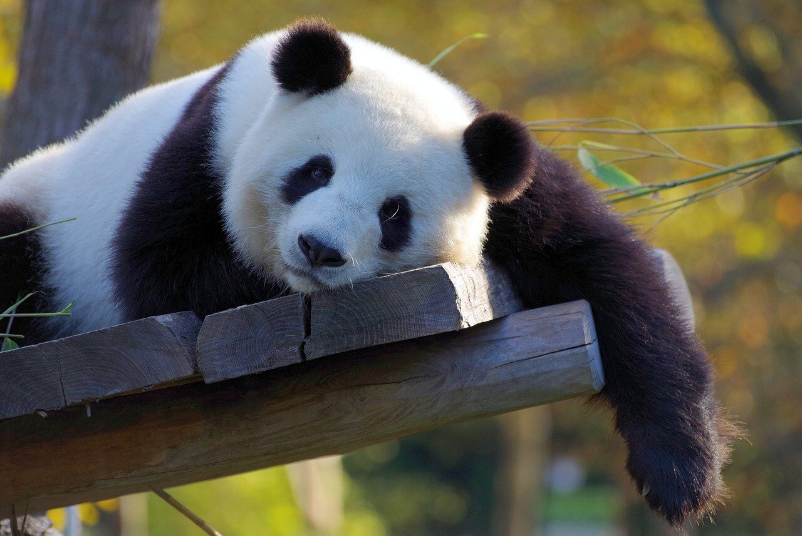
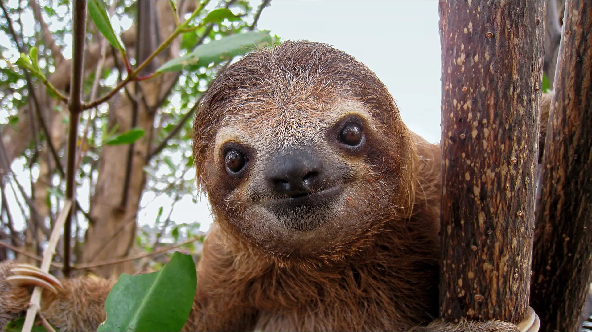

Panda
Az óriáspanda elterjedési területe mindössze 5900 km², amely magában foglalja Szecsuan, Kanszu és Sanhszi kínai tartományok hegyvidéki területeit.
Az óriáspanda természetes élőhelyei a sűrű erdővel benőtt szubtrópusi hegyoldalak. Itt él nyáron 2700–4000 méter magasságig, télen alacsonyabbra vándorol, gyakran 800 méteres magasságig. Élettere általában nedves és csapadékban gazdag; a nyár hűvös, a tél hideg.
Kutya és macska
Kutya
A kutya vagy eb ujjon járó emlős ragadozó állat, a szürke farkas egy mára kihalt alfajának háziasított formája. Valószínűleg a legrégebben háziasított állatfaj. Az egyetlen olyan emlős állatfaj, amely tudományos nevében megkapta a familiaris, azaz a családhoz tartozó jelzőt.
Macska
A macska, más néven házi macska kisebb termetű húsevő emlős, ami a ragadozók rendjén belül a macskafélék családjának Felis neméhez és vadmacska fajához tartozik. A vadmacska alfaja. Ügyes ragadozó, több mint 1000 faj tekinthető a zsákmányának.

Lajhár
A lajhárok az emlősök osztályának, a vendégízületesek öregrendjének, azon belül a szőrös vagy páncélozatlan vendégízületesek rendjének egyik alrendje.